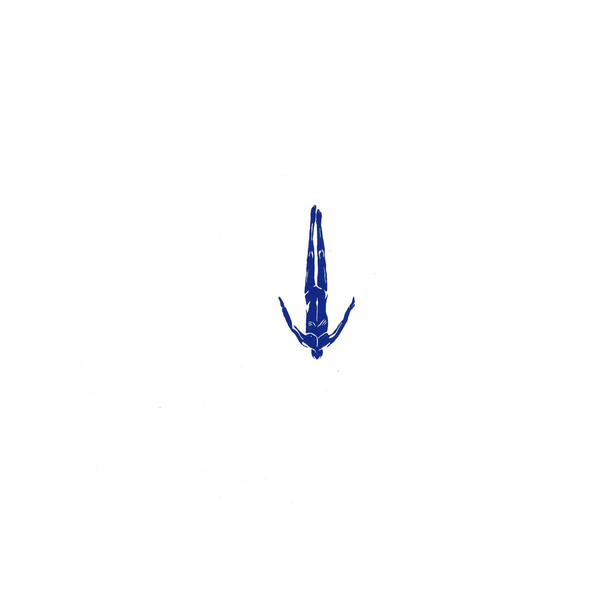

Tales of Us es un proyecto basado en Berlín y formado
por los milaneses Karm y Matteo. Ambos comparten una
visión particular de la música electrónica que reúne
elementos del techno y del house, para
mezclarlos con pop, nu disco o rock. Sus
producciones, siempre reconocibles, pueden ir desde la
pista de baile al salón de casa, con composiciones más
abstractas.
Esta mezcla les ha llevado a ser fijos en la programación
de clubs como el Watergate y el Weekend de Berlín,
el Tenax florentino o la Barraca de Valencia y el DC10 ibicenco
(además de las fiestas Just This en su ciudad natal del norte de Italia
Karm nació en Toronto y Matteo en Nueva York pero se mudaron al país transalpino de niños)).
Amigos de Seth Troxler, Shaun Reeves, Ryan Crosson y Lee Curtiss,
todos ellos apasionados por la música de la pareja, han sido publicados en el sello
propiedad de estos: Visionquest. Previamente ya habían publicado en Barraca Music y
Life & Death. Fijos de todo gran festival de electrónica que se precie,
el cuento de Tale of Us acaba de empezar...
Para ir a página oficial
haga click aqui
Afterlife
Afterlife es el nombre de su sello discográfico donde se puede ver bien impregnado su estilo, un Techno melódico donde a través de todas las percusiones, las notas, los acordes y las vocales que transmiten toda la esencia del sello y de los artistas. Como ellos lo dicen, es “una odisea a través del reino de la conciencia”.
